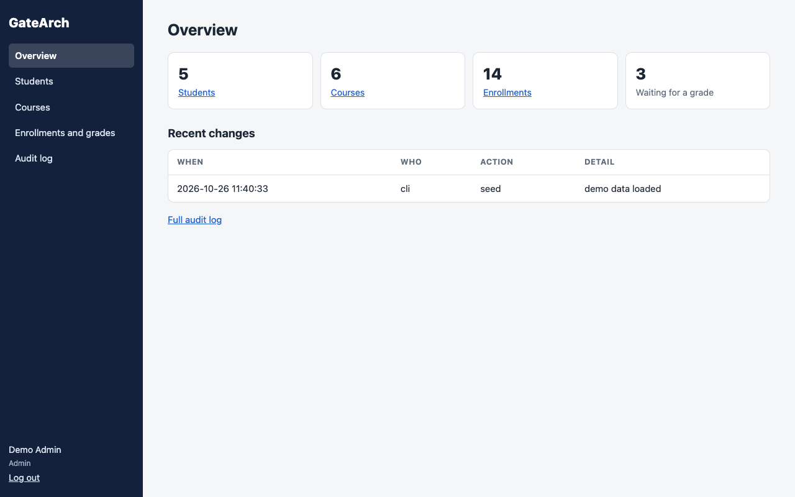
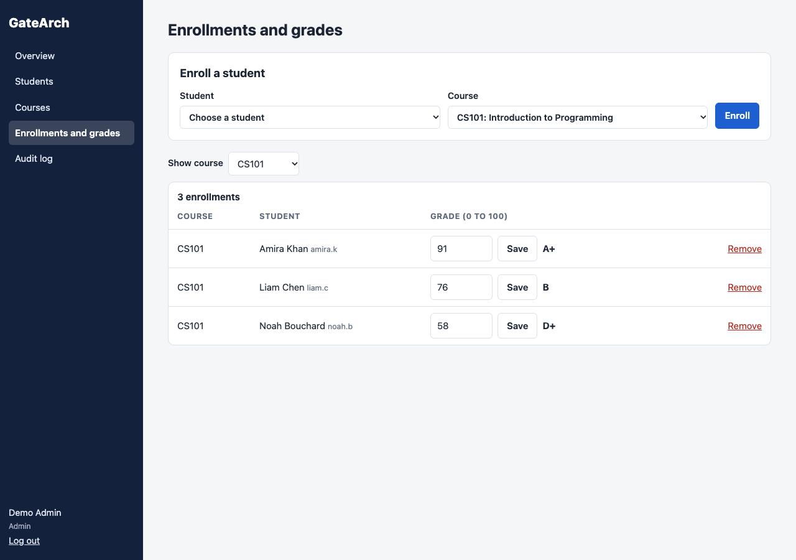
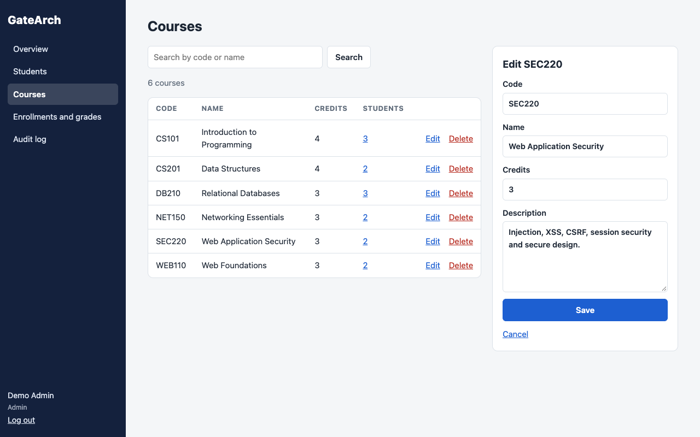
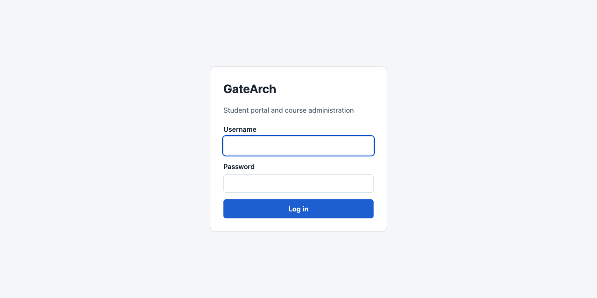
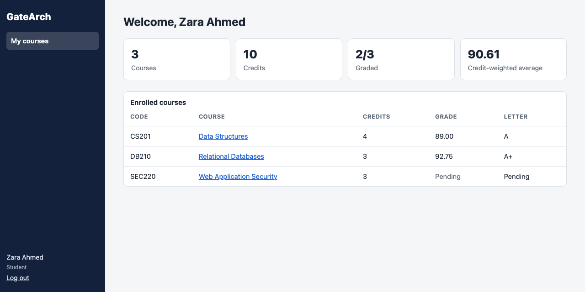
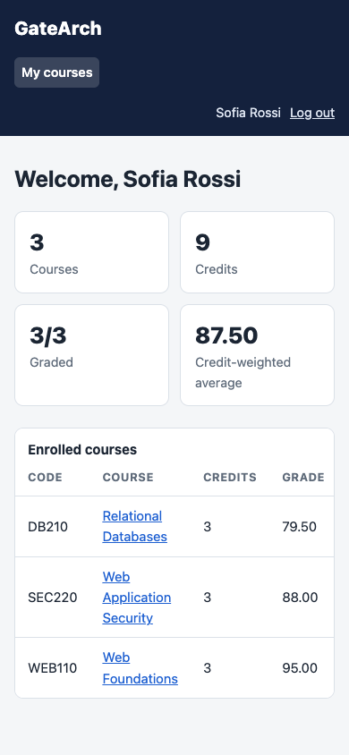

GateArch
Student portal and admin system in plain PHP 8 and MySQL, hardened and tested
Overview

GateArch is a student portal and course administration system written in plain PHP 8 and MySQL, with no framework. Students log in to see their courses, credits, grades, letter grades and a credit-weighted average. Admins manage students, courses, enrollments and grades, and every change they make is written to an audit log.
The point of building it without a framework was to own every security decision a framework normally makes for you: password storage, sessions, CSRF tokens, output escaping, access control and SQL injection. Each one is handled in a single, small place, and each one is tested.
It comes with a Docker Compose stack (Apache with PHP 8.3, and MySQL 8), a script to create the first admin, a demo data loader, and a test suite: 25 unit and integration tests in plain PHP, plus 31 end-to-end checks in Chrome.
The source code is on GitHub at TYFSADIK/gatearch. The project dates from 2023; the code was rebuilt and published in 2026 with login throttling, an audit log, search and pagination, and the tests.
Features
| Role | Page | What it does |
|---|---|---|
| Student | My courses | Enrolled courses with credits, grade and letter; totals; credit-weighted average of graded courses |
| Student | Course page | Code, credits, enrollment date, grade and description, for the student's own courses only |
| Admin | Overview | Counts of students, courses, enrollments and enrollments waiting for a grade; recent changes |
| Admin | Students | Add, edit, reset password, delete; search by name or username; 20 per page |
| Admin | Courses | Add, edit, delete; search by code or name; student counts linking to the enrollments |
| Admin | Enrollments and grades | Enroll a student, grade inline from 0 to 100 with two decimals, clear a grade, remove an enrollment, filter by course |
| Admin | Audit log | Every admin change: who, what and when, newest first |


Architecture
The layout keeps code out of reach of the web server. Only public/ is served; it holds one small PHP file per page and the CSS and JavaScript. Everything else sits beside it:
public/ web root: login, dashboard, course, admin pages, assets/
includes/ bootstrap, config, db, repo (every SQL query), auth, validate, layout
sql/ MySQL schema
bin/ create-admin.php, seed-demo.php
tests/ run.php and the SQLite copy of the schemaincludes/, sql/, bin/ and tests/ also carry an .htaccess with Require all denied, in case the whole folder is ever served from XAMPP's htdocs. The web root sends security headers: a Content-Security-Policy that allows only same-origin scripts, X-Frame-Options: DENY and nosniff.
Database
The database does not trust the application. Unique keys stop duplicate usernames, course codes and enrollments; CHECK constraints keep grades between 0 and 100 and credits between 1 and 12; ON DELETE CASCADE removes a deleted student's or course's enrollments and grades. A grade has its own table, one row per enrollment, so an ungraded course is simply a missing row.
CREATE TABLE enrollments (
id INT AUTO_INCREMENT PRIMARY KEY,
student_id INT NOT NULL,
course_id INT NOT NULL,
enrolled_at DATETIME NOT NULL,
UNIQUE KEY uq_enrollment (student_id, course_id),
FOREIGN KEY (student_id) REFERENCES users(id) ON DELETE CASCADE,
FOREIGN KEY (course_id) REFERENCES courses(id) ON DELETE CASCADE
) ENGINE=InnoDB DEFAULT CHARSET=utf8mb4;
CREATE TABLE grades (
id INT AUTO_INCREMENT PRIMARY KEY,
enrollment_id INT NOT NULL UNIQUE,
grade DECIMAL(5,2) NOT NULL,
updated_at DATETIME NOT NULL,
CHECK (grade BETWEEN 0 AND 100),
FOREIGN KEY (enrollment_id) REFERENCES enrollments(id) ON DELETE CASCADE
) ENGINE=InnoDB DEFAULT CHARSET=utf8mb4;Security, Threat by Threat
| Threat | Defence in GateArch |
|---|---|
| SQL injection | Every query is a PDO prepared statement with bound values, all in repo.php; emulated prepares are off |
| Wildcards in search | % and _ are escaped in LIKE patterns |
| Stolen password table | password_hash() with PASSWORD_DEFAULT; re-hashed on login when the default changes |
| Account enumeration | One message for an unknown user and a wrong password |
| Password guessing | 5 failures per username in 15 minutes locks that account's login |
| Password spraying | 20 failures from one IP in 15 minutes locks that IP |
| Session fixation | session_regenerate_id(true) at login |
| Session theft | HttpOnly and SameSite=Lax cookies, Secure over HTTPS; logout destroys the session and its cookie |
| Cross-site request forgery | One random token per session, checked with hash_equals() on every POST, logout included |
| Cross-site scripting | All output through htmlspecialchars(); a CSP that allows same-origin scripts only |
| Broken access control | require_role() on line one of every page; student queries scoped to the session user |
| Double submission | Post/Redirect/Get after every successful POST |
Build Process
Every query lives in includes/repo.php as a small function. Reviewing the app for SQL injection means reading one file, and the rule is simple: no variable is ever concatenated into SQL. The student dashboard query shows the pattern: the student ID comes from the session, and it is bound.
function student_courses(PDO $pdo, int $studentId): array
{
$stmt = $pdo->prepare(
'SELECT c.id, c.code, c.name, c.credits, g.grade, g.updated_at
FROM enrollments e
JOIN courses c ON c.id = e.course_id
LEFT JOIN grades g ON g.enrollment_id = e.id
WHERE e.student_id = ?
ORDER BY c.code'
);
$stmt->execute([$studentId]);
return $stmt->fetchAll();
}Each protected page starts with one call. Not logged in goes to the login page; the wrong role gets a 403. Auditing access control means checking that first line in each file in public/.
require __DIR__ . '/../includes/bootstrap.php';
$user = require_role('admin');The throttle runs before the password check, and counts failures separately per username and per IP. That split matters on a campus network: many students share one public IP, so a single IP-wide limit of five would let one person lock out everyone.
function attempt_login(PDO $pdo, string $username, string $password, string $ip): array
{
$failures = recent_failures($pdo, $username, $ip, config('login_window_seconds'));
if ($failures['user'] >= config('login_max_failures') || $failures['ip'] >= config('login_max_failures_per_ip')) {
return [LOGIN_LOCKED, null];
}
$user = find_user_by_username($pdo, $username);
if ($user === null || !password_verify($password, $user['password_hash'])) {
record_failure($pdo, $username, $ip);
return [LOGIN_BAD, null];
}
clear_failures($pdo, $username);
rehash_if_needed($pdo, $user, $password);
return [LOGIN_OK, $user];
}The token is created once per session and checked on every POST. A token regenerated on every page load would break the first tab as soon as a second one opened.
function csrf_token(): string
{
if (empty($_SESSION['csrf'])) {
$_SESSION['csrf'] = bin2hex(random_bytes(32));
}
return $_SESSION['csrf'];
}
function verify_csrf(): void
{
if ($_SERVER['REQUEST_METHOD'] !== 'POST') {
return;
}
$sent = $_POST['csrf'] ?? '';
if (!is_string($sent) || empty($_SESSION['csrf']) || !hash_equals($_SESSION['csrf'], $sent)) {
http_response_code(403);
exit('403: the form expired. Go back, reload the page and try again.');
}
}JavaScript checks fields before submitting, for speed. The server checks again on every POST, because it is the only check that counts: the tests submit bad data with client checks switched off, and the server still refuses it. Grades accept up to two decimals, and an empty grade field clears the grade.
A grade is an insert or an update depending on whether one exists. Instead of database-specific upsert syntax, the code selects and then writes inside a transaction, so the same function runs on MySQL in production and on SQLite in the tests.
Every successful admin POST writes an audit entry, sets a one-time flash message and redirects. Refreshing a page never repeats an action, and the overview always shows what changed and who changed it.
Logging In


Testing

php tests/run.php runs 25 tests against an in-memory SQLite copy of the schema, with no framework and no Composer. They call the real functions in repo.php, auth.php and validate.php:
- Passwords are hashed, and wrong and unknown logins look identical
- Throttling: locked after 5 failures even with the right password, old failures expire, success clears the count, a locked account does not lock other users on the same IP, and spraying from one IP stops at 20
- Scoping: the dashboard and course queries never return another student's rows
- The database rules: duplicate usernames, codes and enrollments rejected; grades outside 0 to 100 rejected with the transaction rolled back; cascades from students and from courses; admins never deleted by the student delete
- Search escapes
%and_; classic injection strings are treated as plain data and the table is unchanged - Pagination, credit-weighted averages, letter grade edges, grade parsing, input validation, output escaping, audit order and dashboard stats
Then 31 checks ran end to end in Chrome against PHP's built-in server: login and logout, a course and a student created, an XSS payload stored as a name and shown as text, client and server validation, duplicate rejection, enrollment and grading, a POST without a CSRF token refused with 403, the audit log, a student kept out of admin pages and other students' courses, no sideways scrolling on a phone, the lockout, a new session ID at login, and HttpOnly, SameSite cookies.
The end-to-end run found two real bugs that the unit tests had not. The first was the lockout counting failures per IP for everyone: five bad logins locked every account on that IP, the campus problem described above. The second was a layout bug that made the student dashboard scroll sideways on phones. Both are fixed, and the first now has its own tests.
Challenges and Lessons Learned
Without a framework you own the discipline. A framework gives you CSRF protection, escaping and query builders by default. Here each one is a convention, so each convention lives in exactly one place and is easy to check: all SQL in one file, all output through h(), one guard per page.
Security controls can hurt users. An IP-wide lockout looks safe and is a denial-of-service switch on a shared network. Splitting the limits per username and per IP kept the protection without the collateral damage.
Session lifecycle details matter. Regenerate the ID when privilege changes, destroy the session and its cookie on logout, and make logout a POST so another site cannot log you out with an image tag.
Let the database enforce the rules too. Application checks miss things; unique keys, checks and cascades do not. The tests try to break the rules directly in the database and confirm it refuses.
End-to-end tests find what unit tests cannot. Both real bugs only showed up when a browser drove the real server.
What I Learned
- The full PHP session lifecycle and the hardening each step needs
- Why password hashing, throttling and identical error messages belong together
- CSRF tokens per session, compared in constant time with
hash_equals() - Relational design with unique keys, check constraints and cascading deletes
- Keeping SQL portable enough to test on SQLite and run on MySQL
- Post/Redirect/Get and flash messages as the default for server-rendered forms
- Writing a useful test suite with no framework at all
What You Need
| Category | Item | Notes |
|---|---|---|
| Runtime | PHP 8.1 or later with PDO | pdo_mysql in production, pdo_sqlite for the tests |
| Database | MySQL 8 or MariaDB 10.6+ | Schema in sql/schema.sql |
| Server | Apache with mod_rewrite and mod_headers | Or Docker: docker compose up -d --build |
| Skill | PHP, SQL and HTML forms | No framework to learn |
| Skill | Web security basics | Injection, XSS, CSRF, sessions, access control |
To try it locally: copy .env.example to .env and set the passwords, run docker compose up -d --build, then docker compose exec web php bin/seed-demo.php and log in as admin or amira.k with the demo password the script prints.
What Is Next
- Self-service password reset with expiring one-time tokens
- Two-factor login for admins
- CSV import of students and export of grades
- Email notifications when a grade is posted
- A test run against MySQL in CI, alongside SQLite
Cite This Page
Citation formats
Plain text
Taki Sadik, "GateArch", TYFSADIK, https://tyfsadik.org/work/applications/gatearch.html (accessed 2026-10-22).BibTeX
@misc{sadik-gatearch,
author = {Sadik, MD. Taki Yasir Faraji},
title = {GateArch},
year = {2026},
url = {https://tyfsadik.org/work/applications/gatearch.html},
urldate = {2026-10-22}
}APA
Sadik, M. T. Y. F. (2026). GateArch. TYFSADIK. https://tyfsadik.org/work/applications/gatearch.html